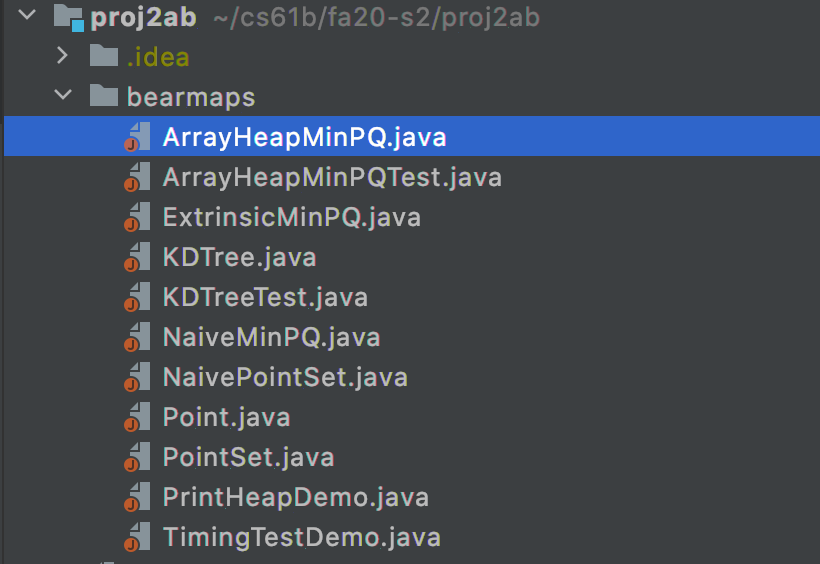
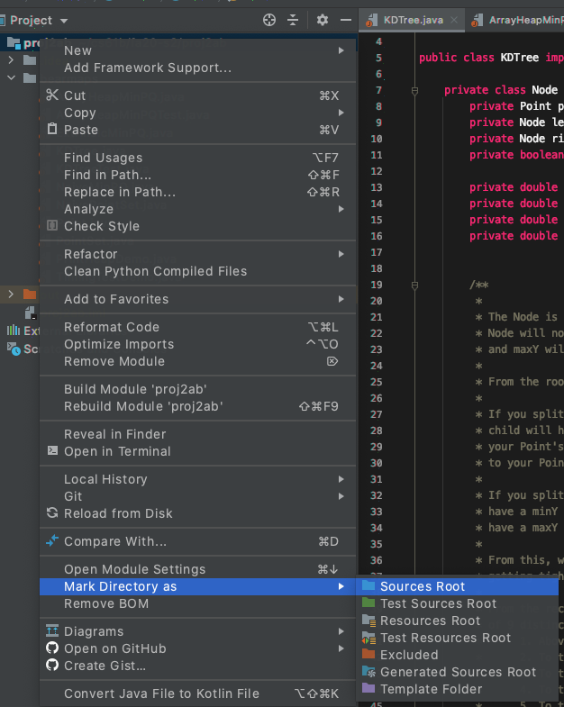
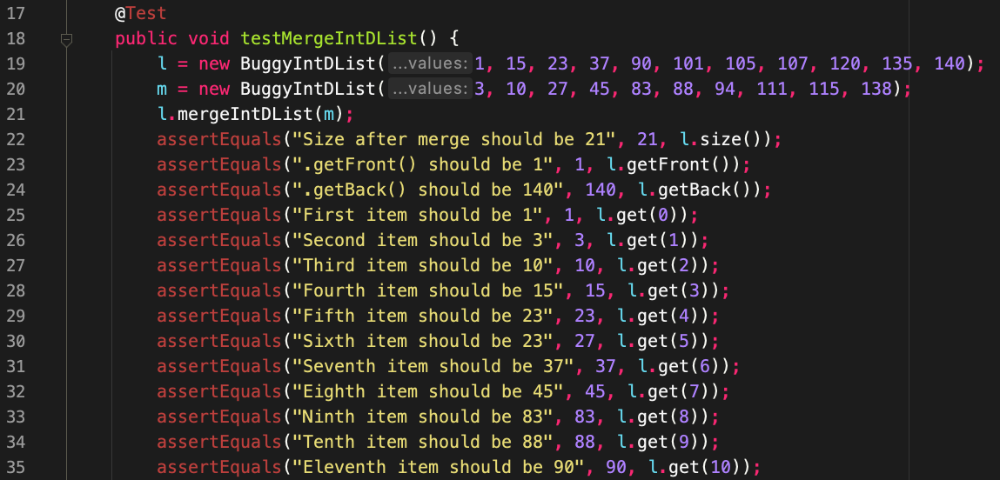
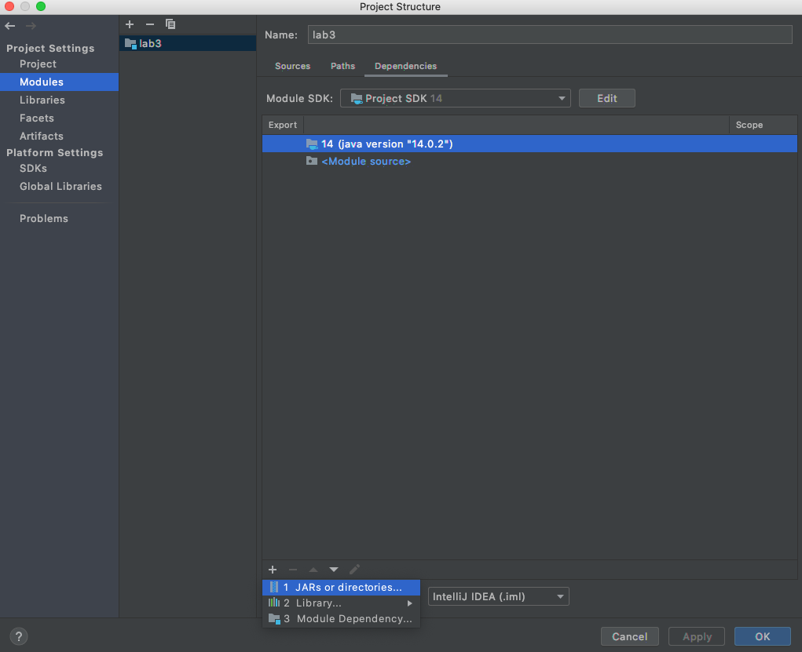

IntelliJ WTFS
This document is intended to help you through frequently encountered weird technical failure scenarios (WTFS) in IntelliJ. It will be populated as questions arise.
I can’t run my Java file/Files don’t show up as java files

If your files look like this then you haven’t properly imported the project.
To fix this, you must simply right-click the outer-most folder which will be your
assignment folder, in this case, proj2ab, and scroll down to “Mark directory as …”
and hit “Sources Root”. It’ll look like this:

You may need to do this with the src folder for most assignments, and mark the
tests folder as a Test Sources Root. Your src folder should be blue and
your tests folder should be green.
See Assignment Workflow for additional instructions on importing a new project.
JUnit things show up as red in IntelliJ

This means that you forgot to add the CS 61B javalib as a library for this project!
IntelliJ cannot find the JUnit specific things like @Test or assertEquals
since you forgot to import them.
Every time you start a new assignment (unfortunately, EVERY TIME) you must readd
the javalib. To do this, simply go to “File” -> “Project Structure” -> “Libraries”
and add the javalib inside your repo. See Lab 2 Setup
for additional instructions on adding Java libraries.
package org.junit does not exist

This sometimes happens with IntelliJ where you’ve added the correct libraries,
but cannot run the code. To fix this, you need to add the libraries as a direct
dependency to the module. To do that, go to “File” -> “Project Structure” ->
“Modules” -> “Dependencies” and hit the “+” icon in the bottom left and select
“JARs or directories”. Now, highlight every .jar file in your javalib folder
and add them. This is what the setting should look like right before you add
the JARs:

Output path is not specified

IntelliJ puts all the compiled Java .class files in a special folder called
out. You may have seen it before. Usually, IntelliJ will be able to determine
where to put the out folder, but sometimes it cannot and needs your help. To
specify where to put the out foler, go to:
“File” > “Project Structure” > “Project” > “Project compiler output” and simply
add the output path. The output path should be of the form path/to/assignment/out
where the prefix is dependent on the path to your assignment (hw, lab, proj, etc)
and the suffix must be /out. Example for homework 2:

Everything looks right but it still doesn’t work!
Sometimes the easiest thing is to simply do it all over again. Even if you know you just did everything correctly, starting over very often just fixes the problem. First close the project (“File” -> “Close Project”), quit the IntelliJ application, and then reimport the project from the beginning.
Everything looks wrong and nothing works!
Sometimes, the easiest thing is to simply do it ALL over again. Specifically, we need to purge Intellij’s memory and make it forget that our project ever existed.
Intellij stores project information as .idea folders and .iml files. To make it forget our project, we’ll be
deleting those:
- Close the project (“File” -> “Close Project”)
- Quit Intellij
- In File Explorer / Finder, go to the project folder
- Now, you’ll need to show hidden files, so that
.ideaand.imlshow up: - Delete any
.ideafolders and.imlfiles you see - Re-open the project in Intellij
At this point, the project should look normal, as if you’re opening it for the first time (you’ll need to import libraries again, if applicable). However, if things still look wrong, you may need to do the following:
- Open up Project Structure (“File” -> “Project Structure”)
- In the “Project” tab:
- Set SDK and Language Level
- Choose Compiler Output folder to be
<path>/<to>/<project>/out. You may have to create this folder yourself
- In the “Modules” tab: Delete all modules, if any. Then, create a new module with the default settings
- In the “Libraries” tab: Re-import libraries for the project.
- At this point, go back and make sure that all settings were properly applied. Once you verified that everything looks correct, close Project Structure
- In the Project sidebar on the left, right click on the root folder and mark as source (Right click -> “Mark Directory as” -> “Sources Root”)